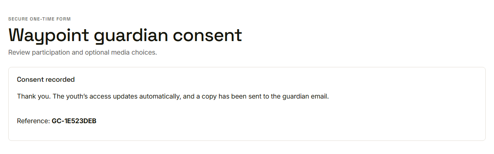
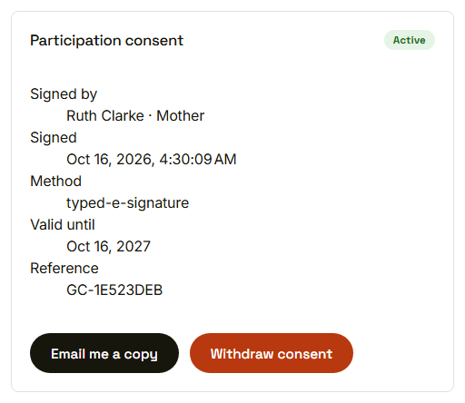
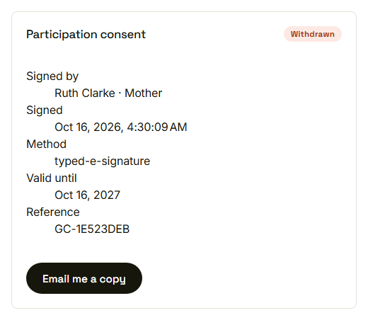

Waypoint · Journey 05
Give guardian consent
From a blocked young person to a signed record
A guardian needs to sign off
 Held here until consent is recorded
Held here until consent is recorded
A secure link is sent
 The address is partly hidden
The address is partly hidden
Consent recorded

A reference number and an emailed copy
The record stays visible

Active, with who, when and how
Withdrawn from then on

The record stays, the button goes
Things to remember
- No participation consent, no learning
- The guardian signs through a secure link, no account needed
- Media choices are optional and recorded one by one
- Withdrawing takes effect from then on